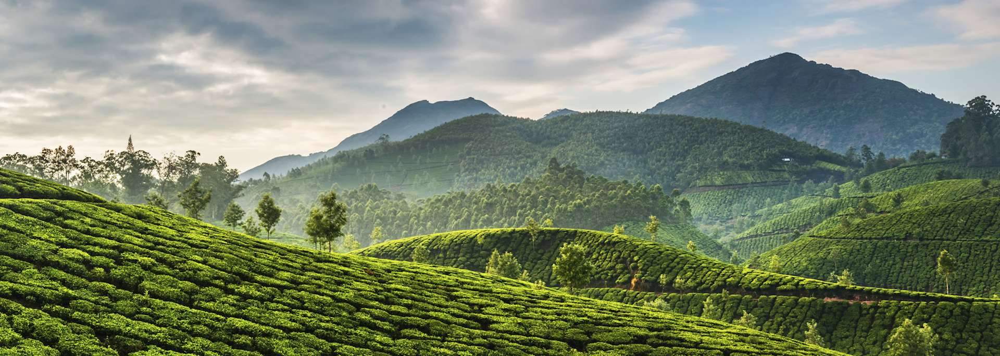
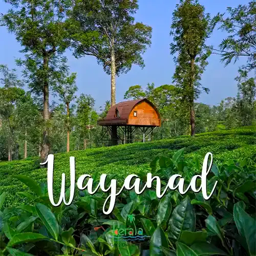

HILL STATIONS
Kerala is home to a spectacular chain of mist-clad hill stations nestled primarily along the windward side of the majestic Western Ghats, offering a refreshing escape from the tropical heat.Foremost among these is Munnar, a sprawling green paradise renowned for its vast, rolling tea plantations, cascading waterfalls, and the rare, twelve-year blooming cycle of the Neelakurinji flower. Moving further north, Wayanad captivates travelers with its dense spice-scented forests, historic Neolithic-age caves, and lush wildlife sanctuaries. Adventure and wildlife enthusiasts frequently flock to Thekkady, which frames the elephant-rich Periyar Tiger Reserve, or choose the rolling meadows and pine forests of Vagamon for paragliding and tranquility.

MUNNAR
Munnar, a serene hill station, renowned for its misty valleys, sprawling tea plantations and vibrant biodiversity, making it a haven for nature and tranquility seekers.
Munnar, a premier hill station in Kerala, is famous for its sprawling tea gardens, misty hills, and scenic waterfalls, making it ideal for nature lovers and adventurers. Key attractions include Eravikulam National Park, Mattupetty Dam, Tea Gardens, Top Station, and Attukal Waterfalls.
Activities
Hiking up Chokramudi Peak, jeep safari to Kolukkumalai, and visiting the Carmelagiri Elephant Park.The Tea Museum in Munnar has preserved and showcased the history of this land well. This museum houses artifacts, photographs and machinery. Each of the objects here has a story to tell of bygone times and a very fascinating era. The Nallathanni Estate of Tata Tea is where the Museum is located.
Mattupatty Dam
Mattupetty Dam, near Munnar in Idukki District, is a storage Concrete Gravity dam built in the mountains of Kerala, India to conserve water for hydroelectricity.It has been a vital source of power yielding along with other such dams, huge revenue to the states was constructed in 1949 and opened on1953

VAGAMON
A serene hill station in Idukki, known for its cool climate, rolling meadows, tea plantations, and adventure activities like paragliding and trekking.
Vagamon is renowned for its breathtaking landscapes that include verdant hills, sprawling tea plantations, dense pine forests, and lush meadows. The hill station is situated at an altitude of around 1,100 meters above sea level, providing a cool and pleasant climate throughout the year. The misty mornings and evenings add a touch of magic to the already stunning scenery, making Vagamon a photographer's paradise.
Adventure activities
Vagamon is a hub for adventure activities, offering a range of thrilling experiences for adventure seekers. The unique topography and favorable weather conditions make it an ideal destination for paragliding. The hill station's grassy slopes and open spaces provide excellent take-off points, and the panoramic views of the valleys and hills below make the experience truly exhilarating.Trekking is another popular activity in Vagamon.
Tea Plantations and Pine Forests
Vagamon is known for its tea plantations, which are a major part of the region's landscape and economy. The neatly manicured tea gardens, with their vibrant green tea bushes, create a picturesque setting that is a delight to explore. Another highlight of Vagamon is the enchanting pine forests. The tall, slender pine trees create a serene and mystical atmosphere, making it a popular spot for nature walks and photography.
Waterfalls and Lakes
Vagamon is blessed with several waterfalls and lakes that add to its natural charm. The Vagamon Falls, also known as Palaruvi Falls, is a beautiful cascade that flows down from a height of about 30 feet. The waterfall is surrounded by lush greenery and provides a serene spot for picnics and relaxation. The nearby Vagamon Lake is another popular attraction, offering boating and fishing opportunities

WAYANAD
A picturesque district in Kerala known for its spice plantations, diverse wildlife, prehistoric Edakkal Caves, and vibrant tribal culture, offering adventure, history, and natural beauty.
Wayanad, a verdant district nestled in the Western Ghats of Kerala, is a picturesque destination that offers a harmonious blend of natural beauty, rich cultural heritage, and adventure. Known for its sprawling spice plantations, mist-covered mountains, and diverse wildlife, Wayanad provides an ideal retreat for nature lovers, history enthusiasts, and thrill-seekers alike.
Spice cultivations
Wayanad is renowned for its spice plantations, which include coffee, tea, pepper, cardamom, and vanilla. Visiting these plantations offers an immersive experience into the region's agricultural practices and allows visitors to learn about the cultivation and processing of spices that are integral to Kerala's economy and cuisine.
Adventure Activities and Outdoor Experience
Wayanad offers a plethora of activities. Trekking is a popular pursuit, with trails leading to mesmerizing spots like Chembra Peak, the highest point in Wayanad. The heart-shaped lake en route to the summit is a unique attraction, adding a romantic touch to the trekking experience. Other adventure activities include bamboo rafting in the Kuruva Island, exploring the Banasura Sagar Dam, which is the largest earthen dam in India, and engaging in zip-lining and boating at various locations. The natural topography of Wayanad, with its hills, rivers, and forests, makes it an excellent destination for outdoor enthusiasts.